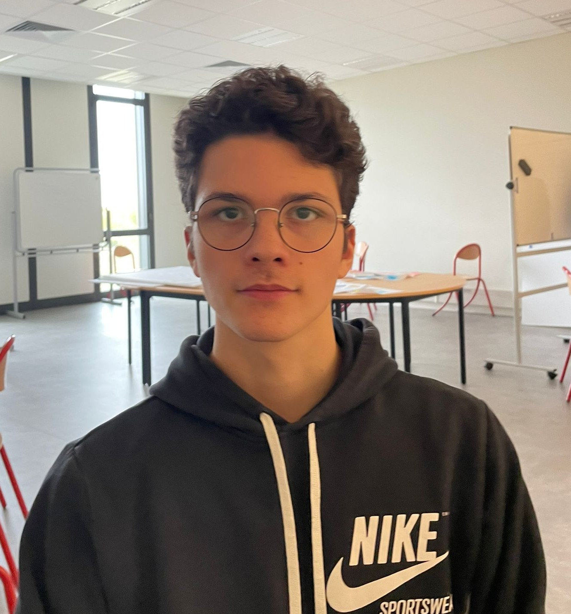

Présentation du Projet
Notre idée est née d'un problème sociétal majeur : la santé. Comme vous le savez, nous sommes confrontés à un manque de personnel alarmant dans le secteur médical, et plus particulièrement en milieu hospitalier. C'est pourquoi nous proposons aujourd'hui « L'HÔPITAL 4.0 ».
Cet Hôpital 4.0 s'appuiera sur des avancées technologiques axées sur la gestion des consommables liés aux soins. Actuellement, le personnel soignant perd beaucoup de temps à chercher son matériel dans une pharmacie interne à l'hôpital, ce qui représente une absence de 10 à 20 minutes à chaque fois. Il est primordial de supprimer cette perte de temps inutile afin de dégager du temps au personnel soignant qui sera utilisé au profit des patients.
Contexte
Le secteur hospitalier fait face à une pénurie croissante de personnel qualifié. Dans ce contexte, chaque minute compte et doit être optimisée pour améliorer la qualité des soins.
Problématique
Les infirmiers et aides-soignants passent en moyenne 10 à 20 minutes par recherche de matériel dans les pharmacies internes. Cette perte de temps se répète plusieurs fois par jour, représentant des heures précieuses qui pourraient être consacrées aux patients.
Le Système
Architecture Globale
Notre système HÔPITAL 4.0 se compose de plusieurs éléments interconnectés permettant une automatisation complète de la gestion des consommables médicaux.
Composants Principaux
Bras Robot : Assure la préhension et le placement précis des consommables.
Convoyeur Automatisé : Transporte les articles de la zone de stockage vers les points de distribution.
Système de Gestion : Coordonne l'ensemble des opérations et gère l'inventaire en temps réel.
Cahier des Charges
Spécifications techniques et fonctionnelles du projet HÔPITAL 4.0.
Le système a pour objectif d'automatiser la gestion des flux de médicaments au sein de l'hôpital, depuis la Pharmacie à Usage Intérieur jusqu'aux services demandeurs. Grâce à l'intégration d'un bras robotisé et d'un convoyeur, l'ensemble doit permettre de réduire les déplacements du personnel, d'augmenter la rapidité d'acheminement et d'améliorer la fiabilité du circuit logistique. Le système s'appuie sur un site web centralisé qui coordonne les commandes, les enregistre dans une base de données, les transmet aux machines et garantit la synchronisation entre le bras robot et le convoyeur. L'ensemble doit fonctionner de manière fiable, continue, sécurisée et conforme aux normes applicables à l'environnement hospitalier.
Le bras robotisé doit être capable de manipuler des colis médicaux standardisés d'un poids maximal de deux kilogrammes, avec une précision de positionnement de l'ordre du centimètre et une répétabilité supérieure à la quasi-totalité des cycles. Son architecture doit permettre une couverture complète des zones de dépose prévues, sans repositionnement manuel. La conception doit maintenir un haut niveau de rigidité afin d'éviter la déformation des segments lors des phases de manipulation et lors des accélérations.
La pince doit garantir une prise sûre et non destructive, tout en assurant une répétabilité stable du serrage. Les choix mécaniques doivent également tenir compte de l'environnement hospitalier, notamment en matière de matériaux propres, lavables et compatibles avec un nettoyage simplifié. Le bras doit intégrer des dispositifs mécaniques de sécurité, dont des arrêts d'urgence et des capteurs de fin de course, afin de prévenir les collisions, les surcharges mécaniques et les efforts excessifs sur les moteurs.
Le bras repose sur une architecture électronique combinant moteurs, capteurs et unité de commande. Les moteurs doivent être alimentés par une électronique stable et protégée, et capables de fournir les couples nécessaires au mouvement des six axes. Les capteurs utilisés pour la détection, l'identification et le contrôle de serrage doivent fonctionner de manière fiable, sans être perturbés par l'environnement hospitalier.
L'électronique doit également garantir la continuité d'alimentation grâce au réseau hospitalier et au basculement vers un système de secours en cas de coupure. L'unité de commande doit permettre une communication fiable avec le site web, la base de données et les autres sous-systèmes. Enfin, l'ensemble électronique doit être protégé dans un coffret sécurisé afin de respecter les exigences de sécurité électrique et de maintenance.
Le système d'automatisme du bras doit assurer la coordination complète de la séquence de manipulation : détection du colis, identification, saisie, déplacement, contrôle du maintien dans la pince et dépose sur le convoyeur. Il doit garantir une communication constante avec la base de données pour obtenir les informations de destination, gérer les priorités et assurer la traçabilité.
L'automatisme doit respecter les normes d'arrêt d'urgence, de sécurité machine et de détection d'ouverture de la cage de protection. En cas de défaut, il doit se mettre immédiatement en sécurité et permettre une reprise manuelle sans perturber le déroulement des opérations. L'ensemble doit conserver un haut niveau de fiabilité et de répétabilité, indispensable pour un usage hospitalier.
Le convoyeur doit assurer le déplacement linéaire et stable des bacs médicaux, depuis la zone de dépose du bras robotisé jusqu'à la zone d'acheminement prévue. Il doit accepter des charges allant jusqu'à quinze kilogrammes tout en maintenant une vitesse régulière de vingt centimètres par seconde. La structure doit supporter les contraintes de compression verticale, de flexion et de torsion induites par les charges variables.
Les tambours, l'arbre et les éléments de support doivent être dimensionnés pour résister au couple moteur, aux accélérations et aux efforts dynamiques. L'ensemble doit fonctionner silencieusement et être compatible avec les exigences d'hygiène hospitalière. Enfin, la maintenance doit être simple, rapide et fondée sur des composants standards faciles à remplacer.
Le convoyeur est piloté par une unité de commande locale constituée d'un Arduino Uno. Cet automate gère le mouvement du moteur, la lecture des capteurs de début et fin de course et l'exécution des séquences d'acheminement. L'Arduino communique avec le Raspberry Pi via liaison série afin de recevoir les ordres logiciels émis par le site web et de transmettre l'état du système.
L'alimentation du moteur et de l'électronique est assurée par une chaîne électrique protégée et compatible avec les standards hospitaliers. Les capteurs doivent fournir une information fiable permettant de contrôler la progression des bacs sans risque d'erreur ou d'interruption intempestive.
L'automatisme du convoyeur repose sur l'Arduino Uno, qui exécute localement la gestion du mouvement, le traitement des capteurs et les arrêts de sécurité. Cette organisation garantit un fonctionnement déterministe, même en cas de latence ou d'interruption de communication avec la supervision. Le Raspberry Pi transmet les ordres de destination, supervise les flux et gère les priorités, tandis que l'Arduino assure la bonne exécution des cycles mécaniques.
Le système doit pouvoir arrêter instantanément le convoyeur en cas d'urgence, détecter une surcharge ou une anomalie de position, et synchroniser sa séquence avec celle du bras robotisé afin d'assurer un flux continu, fiable et sans collision.
Cahier de Conception
Documentation technique détaillée de la conception du projet HÔPITAL 4.0.
Le cahier de conception décrit précisément les choix techniques mis en œuvre pour concevoir, dimensionner et assembler le bras robotisé et le convoyeur. Il présente les calculs mécaniques, les architectures électroniques, les bilans de puissance, ainsi que les solutions d' automatisme retenues. L' objectif est de fournir un document de référence garantissant que chaque sous-système répond aux contraintes identifiées dans le cahier des charges, tout en assurant robustesse, sécurité et cohérence d'ensemble.
Le bras a été dimensionné pour atteindre une longueur minimale d'un mètre en extension complète et manipuler une charge utile de deux kilogrammes. Les masses de chaque segment ont été estimées avec précision afin de calculer les couples requis sur chaque axe. Ces valeurs ont permis de sélectionner les moteurs adaptés et d'assurer une marge de sécurité suffisante lors des mouvements dynamiques.
La structure est réalisée en HT-PLA recuit, un matériau offrant une bonne rigidité, une ténacité suffisante et une résistance thermique élevée. Les segments sont associés à des axes en aluminium, des roulements, des poulies et courroies permettant la transmission des efforts. L'ensemble a été validé par des simulations mécaniques montrant des contraintes largement inférieures aux limites élastiques du matériau, garantissant une déformation négligeable en fonctionnement.
L'architecture électronique du bras repose sur un ensemble de moteurs pas-à-pas NEMA34 et NEMA17 pour les axes principaux, ainsi que des servomoteurs pour les mouvements nécessitant une grande précision. L'alimentation est assurée par des convertisseurs électriques, permettant de fournir du 24 V aux moteurs et du 5 V aux composants logiques.
Le cœur de commande est un Raspberry Pi 5. Il a été retenu pour sa puissance de calcul, sa compatibilité avec le système ROS et sa capacité à traiter simultanément la communication réseau, l'enregistrement des données et le pilotage du robot. Les capteurs de pression assurent l'identification et la détection du maintien du colis, tout en permettant un contrôle continu du serrage de la pince.
Le Raspberry Pi exécute la logique d'automatisme du bras. Il coordonne la lecture des capteurs, la programmation des mouvements, la gestion du serrage et la communication avec la base de données. L'ensemble des informations transitent par un bus CAN, choisi pour sa fiabilité et sa résistance aux perturbations électriques. Un module CAN dédié assure l'interface entre les capteurs/actionneurs et le contrôleur principal.
L'automatisme gère la séquence complète de prise et de dépôt des colis, tout en assurant la sécurité via l'arrêt d'urgence, la détection d'ouverture de la cage et la surveillance des valeurs critiques. Le système garantit une excellente répétabilité, indispensable en milieu hospitalier.
Le convoyeur est construit autour d'un châssis rigide destiné à supporter les contraintes de flexion, torsion et compression associées au transport de charges pouvant atteindre quinze kilogrammes. Les tambours assurent chacun une transmission efficace du mouvement, tandis que l'arbre central, soumis à des contraintes de torsion et de cisaillement, a été dimensionné pour résister durablement au couple moteur.
Les choix de matériaux reposent sur l' utilisation de profilés en aluminium pour la structure, d' acier pour les éléments très sollicités comme l' arbre, et de PVC industriel pour certaines pièces secondaires. Les simulations mécaniques confirment le bon dimensionnement du convoyeur, notamment en matière de déformation et de contraintes admissibles.
Le convoyeur est commandé par un Arduino Uno, dont la simplicité et la fiabilité répondent parfaitement aux besoins d' un axe unique. L' Arduino gère le moteur, les capteurs et le déroulement des cycles, tandis que le Raspberry Pi assure le pilotage haut niveau et la communication avec le site web.
Le système inclut une alimentation protégée compatible avec les normes hospitalières, ainsi qu' un ensemble de capteurs garantissant le contrôle précis du déplacement des bacs. L' électronique offre une lecture stable des états et une commande régulière du moteur.
L' Arduino Uno exécute localement les séquences d' automatisme du convoyeur. Il assure la mise en marche du tapis, son arrêt, la gestion des capteurs de course et le respect des consignes émises par la supervision. Cette organisation garantit que le convoyeur reste opérationnel même en cas de perturbation des communications.
Le système doit également gérer l' arrêt d' urgence, synchroniser ses opérations avec les mouvements du bras robotisé, assurer une livraison sans collision et permettre une reprise rapide en cas de défaut. L' ensemble respecte les normes de sécurité propres aux systèmes motorisés en milieu hospitalier.
Cahier des Matériaux
Étude détaillée des matériaux utilisés dans le projet HÔPITAL 4.0.
Le choix des matériaux représente une étape centrale dans la conception du bras robotisé et du convoyeur. Les matériaux doivent offrir une résistance mécanique suffisante, une durabilité adaptée, une compatibilité avec les procédés de fabrication disponibles et une intégration cohérente dans un environnement hospitalier. L' étude détaillée a permis d' identifier les matériaux les plus pertinents pour les différentes pièces structurales et fonctionnelles.
La démarche de sélection s' appuie sur l' analyse des contraintes mécaniques, thermiques et environnementales propres à chaque sous-système. Les matériaux candidats ont été évalués selon leur module d' Young, leur limite élastique, leur densité, leur tenue thermique et leur facilité de fabrication. Une matrice de décision pondérée a permis d'objectiver le choix, en tenant compte également des coûts et de la disponibilité des matériaux. Enfin, des simulations numériques ont validé les performances mécaniques des pièces critiques.
Pour les pièces du bras robotisé, plusieurs matériaux ont été étudiés, notamment le PLA haute température, le polycarbonate, le nylon et le polyéthylène. Le PLA haute température s'est révélé être le meilleur compromis, grâce à sa rigidité élevée, sa précision d'impression, sa compatibilité avec le recuit thermique, sa résistance suffisante et son prix attractif. Les simulations montrent que les contraintes exercées sur les pièces en PLA haute température restent largement inférieures à leur limite élastique, garantissant une marge de sécurité élevée.
Les éléments du convoyeur ont été évalués parmi l'aluminium, l'acier S235 et le PVC industriel. L'aluminium a été retenu pour le châssis en raison de sa légèreté, de sa résistance à la corrosion et de sa facilité d'assemblage. L'acier S235, plus résistant, est utilisé pour l'arbre et les pièces soumises à des efforts importants. Le PVC industriel permet d'obtenir des pièces secondaires légères, durables et faciles à usiner. La combinaison de ces matériaux offre un bon équilibre entre rigidité, masse, coût et durabilité.
Le choix du PLA haute température est justifié par son rapport performance-coût favorable, sa facilité de mise en œuvre et sa très bonne tenue mécanique pour une application robotique légère. Sa résistance thermique évite les déformations dues à l'échauffement des moteurs. Les simulations montrent un coefficient de sécurité nettement supérieur aux exigences du projet, confirmant la pertinence de ce choix.
L'aluminium constitue une solution optimale pour la structure, grâce à sa rigidité suffisante, son faible poids et sa résistance naturelle à la corrosion, essentielle en milieu hospitalier. L'acier S235 offre la robustesse nécessaire aux pièces fortement sollicitées mécaniquement. Le PVC industriel complète l'ensemble en permettant de réaliser des pièces d'interface simples et économiques. Cette combinaison garantit un convoyeur fiable, durable et facile à maintenir.
Notre Équipe
Découvrez les membres qui travaillent sur ce projet :
Baptiste Petitjean
Chef de projet
Baptiste Petitjean
Chef de projet, responsable de l'électronique du bras robot.
Hugo Hanniet
PMO
Hugo Hanniet
PMO, responsable de l'automatisme du bras robot.
Louis Feix
Ingénieur projet
Louis Feix
Responsable de l'automatisme du convoyeur.
Jonathan Kasongo Kitenge
Ingénieur projet
Jonathan Kasongo Kitenge
Responsable de l'électronique du convoyeur.

Matéo Cothenet
Ingénieur projet
Matéo Cothenet
Responsable de la conception mécanique du convoyeur.
Doryan Ponchaut
Ingénieur projet
Doryan Ponchaut
Responsable de la conception mécanique du bras robot.
📦 Contrôle Colis
Interface de supervision du convoyeur : importez la liste des colis, suivez les passages capteurs et consultez l'historique des tris.
📋 Liste des Colis
📜 Historique des Événements
- Aucun événement.
🔧 Simulation Capteurs
Envoyez manuellement des signaux pour simuler les capteurs Arduino.